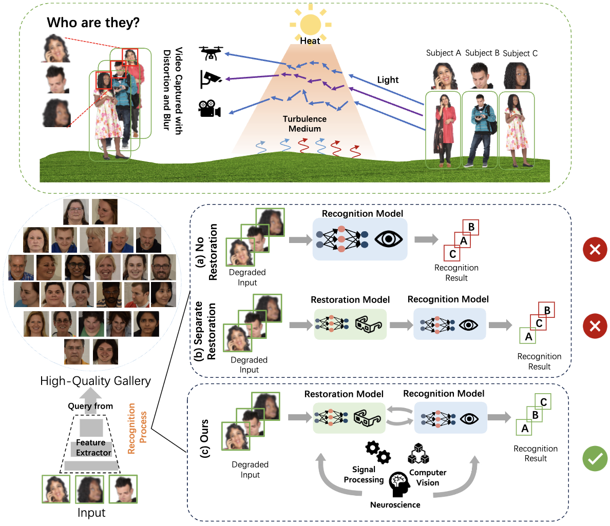

|
Yu Yuan
My name is Yu Yuan (袁煜), a third-year PhD student at
Purdue ECE,
under the supervision of
Prof. Stanley H. Chan.
Prior to this, I obtained my master and bachelor degree in Aerospace Engineering from
Shanghai Jiao Tong University
in 2023 and 2020, respectively, and a bachelor degree in Public Administration in 2020.
I’m always happy to collaborate and make new friends. Feel free to reach out! Email / CV / Google Scholar / Github / Linkedin / Flickr / Blog |

|
Research |
Generative Models |

|
NewtonGen: Physics-Consistent and Controllable Text-to-Video Generation via Neural Newtonian Dynamics Yu Yuan, Xijun Wang, Tharindu Wickremasinghe, Zeeshan Nadir, Bole Ma, Stanley H. Chan Under Review proj / arXiv / > code |

|
Generative Photography: Scene-Consistent Camera Control for Realistic Text-to-Image Synthesis Yu Yuan, Xijun Wang, Yichen Sheng, Prateek Chennuri, Xingguang Zhang, Stanley Chan CVPR 2025 (highlight) & Demo proj / arxiv / code / dataset / demo |

|
Learning to Kindle the Starlight Yu Yuan, Jiaqi Wu, Lindong Wang, Zhongliang Jing, Henry Leung, Shuyuan Zhu, Han Pan arXiv 2023 arXiv / code / dataset |
Computational Photography |

|
iHDR: Iterative HDR Imaging with Arbitrary Number of Inputs Yu Yuan, Yiheng Chi, Xingguang Zhang, Stanley H. Chan ICIP 2025 arXiv |

|
Astrophotography Turbulence Mitigation via Generative Models Joonyeoup Kim, Yu Yuan, Xingguang Zhang, Xijun Wang, Stanley H. Chan ICIP 2025 proj / arXiv |
Real-world Vision |

|
Learning Phase Distortion with Selective State Space Models for Video Turbulence Mitigation Xingguang Zhang, Nicholas Chimitt, Xijun Wang, Yu Yuan, Stanley H. Chan CVPR 2025 (highlight) proj / arXiv / code |
|
 |
Beyond Clean Pixels: Interdisciplinary Lessons from Turbulent Long-Range Face Recognition Lanqing Guo1, Xijun Wang1, Minchul Kim1, Yu Yuan, Wes Robbins, Xingguang Zhang, Stanley H. Chan, Zhangyang Wang, Xiaoming Liu Under Review arXiv |

|
Personalized Generative Low-light Image Denoising and Enhancement Xijun Wang, Prateek Chennuri, Yu Yuan, Bole Ma, Xingguang Zhang, Stanley H. Chan Under Review proj / arXiv |

|
RCMixer: Radar-camera Fusion Based on Vision Transformer for Robust Object Detection Lindong Wang, Hongya Tuo, Yu Yuan, Henry Leung, Zhongliang Jing JVCI 2024 doi |

|
Multimodal Image Fusion based on Hybrid CNN-Transformer and Non-local Cross-modal Attention Yu Yuan, Jiaqi Wu, Zhongliang Jing, Henry Leung, Han Pan arXiv 2023 arXiv / code |
Projects |
|
|
NewtonGen: Physics-Consistent and Controllable Text-to-Video Generation via Neural Newtonian Dynamics Yu Yuan, Xijun Wang, Tharindu Wickremasinghe, Zeeshan Nadir, Bole Ma, Stanley H. Chan Under Review proj / arXiv / > code |